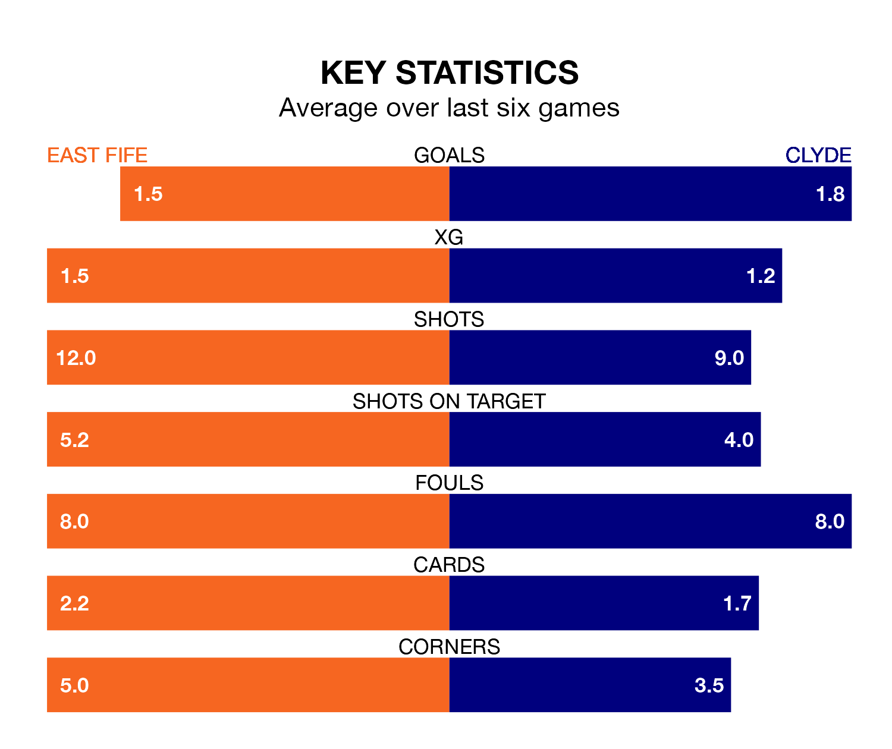

Struggling Clyde face East Fife away at the MGM Timber Bayview Stadium on Saturday looking to build on a win in their last league outing.
After securing all three points with a 3-2 victory over Bonnyrigg Rose Athletic on January 6, the Bully Wee sit bottom of League Two.
They travel to play an East Fife side sixth in the standings, who also won their last match, 2-1 against Dumbarton.
In the last 10 years, East Fife and Clyde have played each other on 22 occasions. East Fife won six of them, Clyde 10, and they drew six times.
On average, the Fifers scored 0.9 goals and the Bully Wee 1.0 in those matches.
Their last meeting was on November 18, when East Fife won 4-0 away.
In Allan Fleming, East Fife can rely on one of the league's safest pair of hands. He has kept five clean sheets in his 18 appearances this season, and only two other 'keepers – Stenhousemuir's Darren Jamieson and Forfar Athletic's Marc McCallum – have been able to prevent the opposition scoring on more occasions in League Two.
In Clyde's net, Jack Leighfield has one clean sheet in 16 games. He has conceded a goal every 45 minutes, 60% more often than the 70 minutes between goals for Fleming.
With 21 goals in 18 games so far this season, the Bully Wee are the league's third-lowest scorers with 1.2 goals per game. And they are conceding more than average, letting in 37 goals at a rate of 2.1 per game.
The Fifers are also below average scorers, with 1.3 goals per game, compared to a league average of 1.4. They have also conceded 1.3 goals per game.
The hosts are in mixed form in League Two, with two wins and a draw from their last six games.
With a win and two draws over that period, the away side's form is slightly worse – they have taken five points from 18, compared to East Fife's seven.
Updated: 15:34, 08/01/24